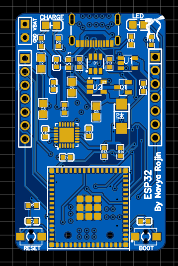

Custom ESP32-S3 Development Board
Battery-powered ESP32 dev board with USB-C, IMU, RTC, SD card and Li-ion charging for rapid embedded prototyping.
Overview
This custom ESP32-S3 development board is designed for embedded prototyping, healthcare devices, and IoT sensor nodes. It integrates power management, motion sensing, real-time clock functionality, and removable storage on a compact PCB.
Key features
- ESP32-S3-MINI module for Wi-Fi enabled embedded applications
- LTC4054-based Li-ion charging from USB with LDO-regulated 3.3 V rail
- USB-C connector with ESD protection for power & data
- MPU6050 IMU and DS3231 RTC on a shared I²C bus
- Micro-SD card interface for logging and data capture
- GPIO, UART, SPI and I²C headers for expansion and debugging
Schematic
PCB layout
3D board view

Applications
- Healthcare monitoring prototypes
- Wearable or bedside IoT devices
- General embedded systems prototyping
- Data-logging and sensor-fusion experiments